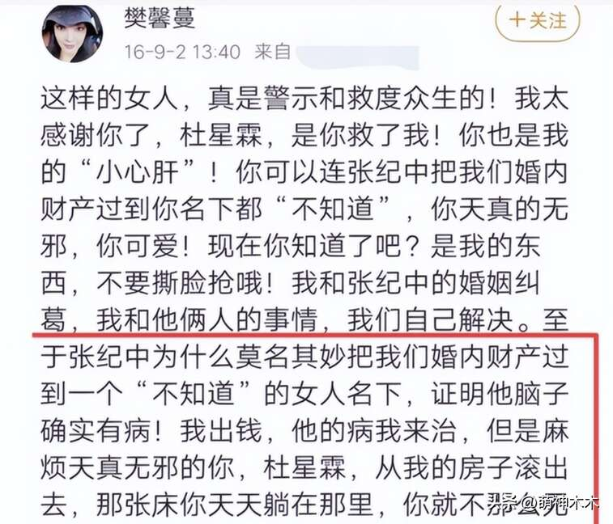
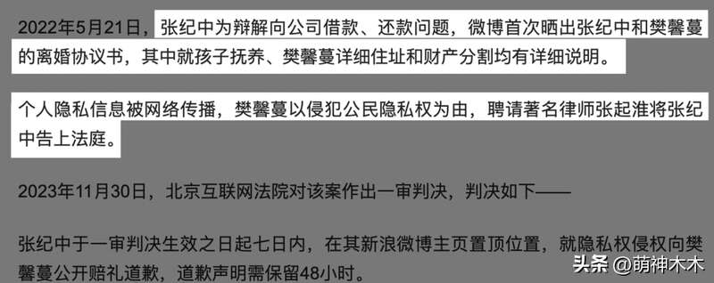
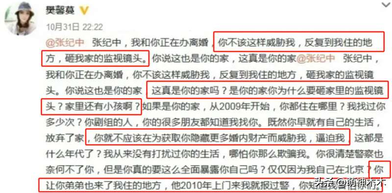
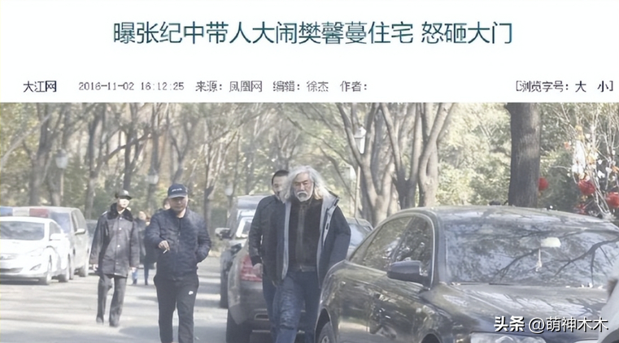
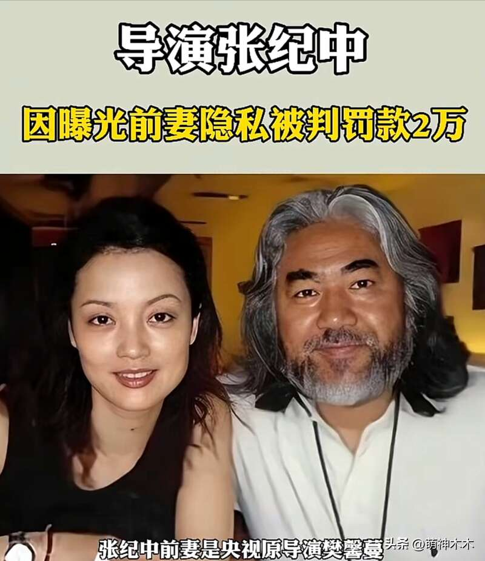
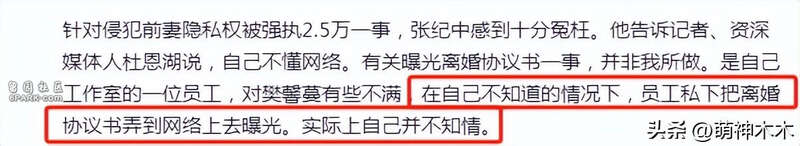
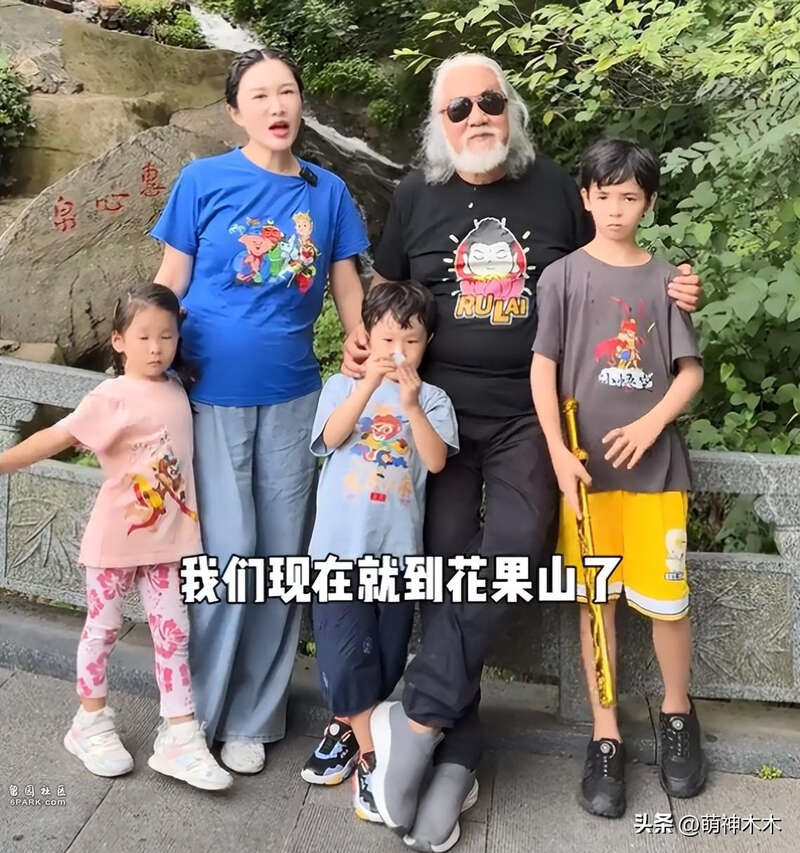

张纪中和学律师出身的杜星霖结婚七年育有三个孩子，二人因为31岁的年龄差备受争议。而事实上，在杜星霖之前，张纪中和樊馨蔓曾有过一段婚姻，二人并不是和平分手，最近的张纪中又因为和樊馨蔓的前尘往事上了热搜。
樊馨蔓是央视原著名导演，和张纪中当年的这一段感情可以用势均力敌来形容。樊馨蔓知名度不高，却靠着不俗的实力在业内打响了名声，曾参与制作过《东方时空·百姓故事》、《感动中国》、《中国魅力城市》、《爱的频率》等影视作品。而追溯她和张纪中的缘分，还要从1988年说起。
樊馨蔓和张纪中同居12年之后公开婚姻关系，于2002年正式登记结婚，2016年结束婚姻关系。根据樊馨蔓本人所说，她和张纪中早在2009年感情就出了问题，在樊馨蔓看来，她受到了对方多次威胁，甚至不顾孩子在家也要找到家里来闹事儿，在割分共同财产中也耍了很多心眼。

显然，张纪中和樊馨蔓几乎已经撕破脸，而让她再也无法沉默的原因是和对方的离婚协议书在全网曝光，其中包括樊馨蔓本人的身份证号和家庭住址，以及孩子的有关信息，更甚者，还有当时她和张纪中离婚割分财产的详细信息全都通通被迫公开了。



这些都让樊馨蔓最终决定要和张纪中对簿公堂，迄今为止，樊馨蔓和张纪中打了至少有三次官司，而有关此次张纪中被强执2.5万，还要追溯到2023年底，当时的樊馨蔓将张纪中告上法庭，并要求男方公开道歉。

直到现在，根据官方信息披露，张纪中已经归还了樊馨蔓2.5万元，可他却不认为自己有错，大呼内心真的好委屈，针对离婚协议书被曝光的情况，张纪中直言是团队员工的个人行为，瞒着自己把离婚协议书公开，自己不懂网络，现在樊馨蔓步步紧逼，让他很不满。
张纪中拒绝道歉并坚称是员工的错，同样，樊馨蔓也坦言无法接受，虽然她已经收到了张纪中的赔款，可自己的隐私权遭到侵犯，内心也受到重创。樊馨蔓最后还不忘喊话张纪中，要他必须无条件执行法院终审判决，尽快到官方报刊上发布声明向她道歉。

双方互不退让，可网友们纳了闷儿，难道张纪中的离婚协议书信息会被员工拿捏在手里吗？这一点很难让人信服。退一万步说，就算张纪中真的不知情，那么离婚协议的信息也是间接因为他而公开的，难道张纪中不应该承担部分责任吗？
张纪中陷入和前妻的官司纠纷，他本人继续岁月静好，在舆论发酵的同时，张纪中又上线秀恩爱，带着三娃回到杜星霖的老家，全家一起开心游花果山，七十多岁还能有这个状态，别提状态有多好了。

不过还是挺令人唏嘘的，张纪中和现任娇妻岁月静好，却带给同甘共苦的前妻不少痛苦，之前的时光又算什么呢？